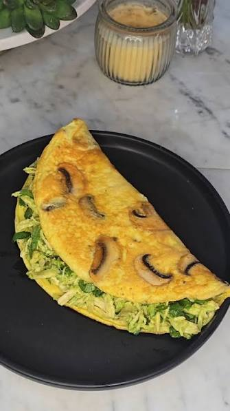

Omelette Power de Claras y Espinaca

Después de una comida con 13,000 mg de sodio, amaneces hinchado. Este omelette es liviano, con mucha proteína y fibra, y te ayuda a volver a tu rutina sin pasar hambre. En esta receta, usamos 3 claras y 1 huevo entero para mantenerlo esponjoso pero bajo en grasa, y lo rellenamos de espinaca y champiñones salteados. Además, tiene solo 210 kcal y te mantiene lleno toda la mañana.